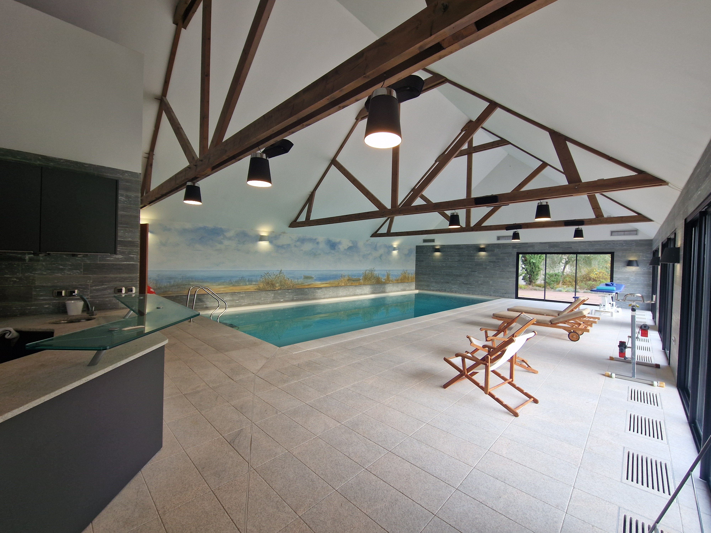
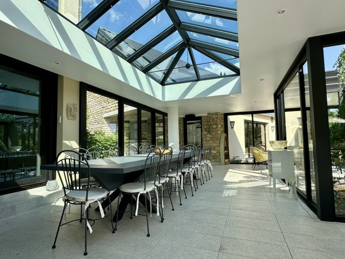

Espace détente
Bien récupérer pour mieux progresser
Un adage dit "On regresse à l'entraînement et on progresse au repos". Il est évidement que l'un n'a pas d'effet sans l'autre. Dans nos vies modernes, la partie repos est souvent mis au second plan. Ici, nous avons tous prévus pour que ce repos soit réel et profitable.
Entre la piscine pour se dégourdir les muscles, le bain froid pour améliorer la récupération musculaire et les salons de repos, tout est prévu pour que votre repos soit le meilleur possible.
La récupération passe également par une alimentation de qualité et adaptée, c'est pourquoi nous confectionnons nos repas avec un nutritionniste partenaire qui adapte les menus en fonction du programme de chaque séminaire.



